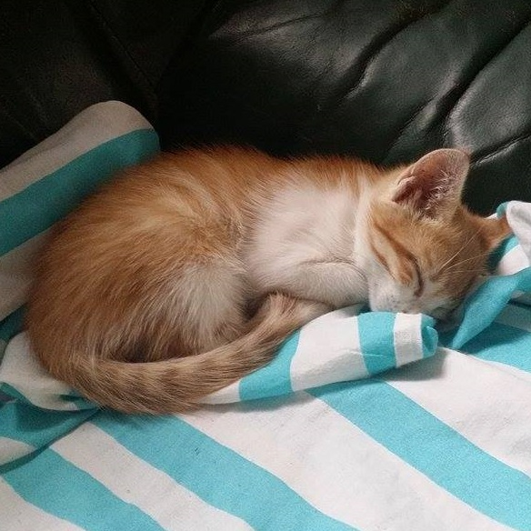

Informatique CSI SGP
Informatique CSI SGPRecherche un ou une modo discord
J'aimerais mettre en place un discord afin de vous proposer :- un espace pour faire des petits cours de rattrapage de temps en temps plus facilement ;
- un espace d'entraide entre pairs sur lequel je pourrais éventuellement intervenir;
- un espace de rencontre entre les anciens élèves et les nouveaux.
Recherche des images
Les liens vers les diférents chapitres sont maintenant décorés avec des images, pour l'instant issues de librairies d'images libres de droit. Je propose à celles et ceux qui le veulent de m'envoyer leurs créations personnelles afin de les remplacer. Vous pourrez déposer vos proposisions dans un repo github que je vais créer pour l'occasion. Les consignes sont les suivantes :- format d'image : 300 x 300 px ;
- avoir un lien avec le chapitre illustré ;
- s'intégrer dans les couleurs choisies pour le site (noir, blanc, bleu, gris).
